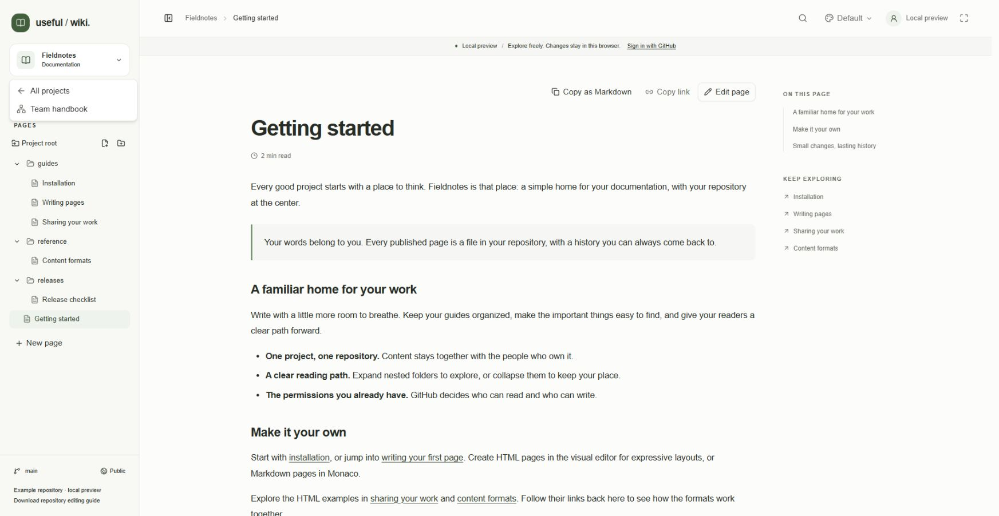
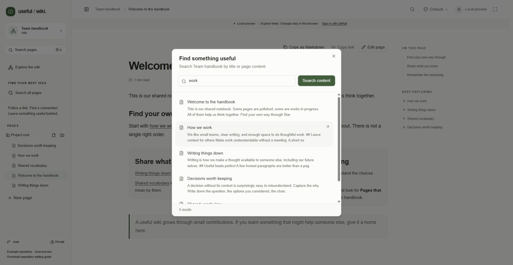
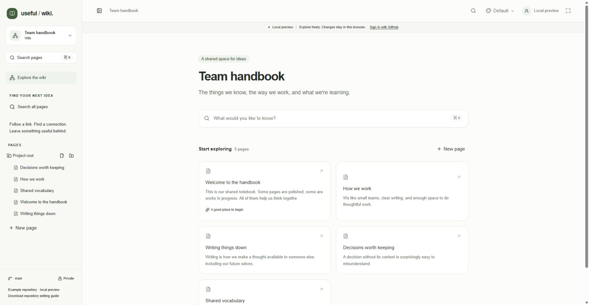
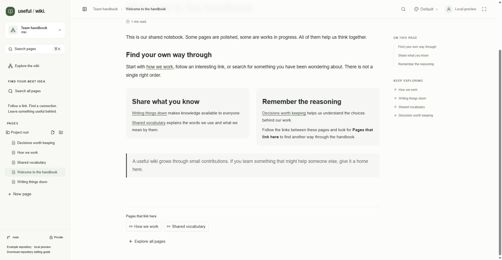

Useful Wiki offers both a documentation reading path and a wiki exploration view. Both use the same repository pages, folder tree, search, and internal links. Use this guide to find a page, move through it, and discover related information.
On the dashboard, choose All projects, Documentation, or Wikis to filter project cards by mode.
Use the dashboard's project search to filter the available cards by name, description, or repository owner/name.
Open a project card to enter its workspace.
To return, open the project name menu near the top of the sidebar and choose All projects.
The project menu in a local preview also links to the other example project. Anonymous visitors see example projects on the dashboard; a direct link can open a registered public project. Private project access depends on the visitor's GitHub account.

Open the project name menu to return to All projects. The local preview also offers Team handbook as another example to explore.
Find Pages in the sidebar. On a small screen, open the header's navigation menu first.
Click a chevron to expand or collapse a folder. Click a page label to read it.
Click a folder name to open its generated index, or follow the breadcrumbs to return to a parent folder.
Click the project breadcrumb to open the project overview and its folder links and page cards.
Hover over an entry to see its repository path. Folder names and filenames determine ordering; page labels may initially come from filenames until a page's authored title has been loaded. Opening a page through search or a document link expands its parent folders automatically.
Folder indexes show immediate subfolders and pages without creating index files in GitHub. The project overview lists available pages and, when present, its top-level folders. Creating and reorganizing entries is covered in Organizing pages.
A page address contains its repository owner, repository name, and full file path, including the extension. Folder indexes have their own addresses, and the project overview uses ?view=project. You can reload these locations or return to them with the browser's Back and Forward buttons.
Changing a displayed title does not change its address. Renaming or moving the file does. If you follow an old link and the location is unavailable, choose Back to project and look for the current entry. Save or preserve active edits before leaving a page when the app asks you to confirm.
Open a page in a Documentation project.
Read the page, then scroll to the navigation cards beneath its content.
Choose Previous or Next to open the adjacent page. A card appears only when that adjacent page exists.
The sequence follows the project's page list and file-path order. Numbered filenames are useful for a deliberate reading sequence. These cards appear in reading view, not while editing.
While reading on a wide screen, find On this page to the right of the document.
Choose a heading to jump to that section.
If the heading belongs to an inactive content tab, the app opens the appropriate tab before scrolling.
The outline is generated from headings in HTML, Markdown, and rich documents, including levels 1–6 and headings nested in supported layouts. It uses readable text, so inline bold or italic styling does not appear as markup in the label. Code-block contents and tab labels are not treated as document headings.
Heading anchors usually come from the displayed heading text. Repeated headings receive distinct anchors, and explicit heading IDs are preserved. To share a section, copy its heading link address. If you change heading text later, review links to that section.
The outline is hidden on narrower screens and while editing. The page itself remains readable, including its tabs and code blocks.

On a wide screen, the local-preview reader displays its heading outline and recognized outgoing page links beside the document.
Choose Search pages in the sidebar, the header's search icon, or the project overview's search box.
Alternatively, press Ctrl+K on Windows/Linux or Cmd+K on macOS while focus is outside the Markdown source editor.
In Find something useful, type the words you want. The list filters current page titles and repository paths immediately.
Choose a result to open that page and close the search dialog.
Title and path filtering is useful when you know a name or folder. It does not inspect page bodies until you request a content search. The page-title list can still contain readable filename labels for pages that have not yet been opened.
Open the same search dialog and enter at least two characters.
Choose Search content or press Enter.
Review the matching page titles and content excerpts, then choose a result.
To try another phrase, change the query. The initial title/path list returns until you submit another content search.
Search is limited to the current project. A content search scans up to 60 supported pages on demand. If some pages were not searched, the dialog displays a partial-results message. Pages that cannot be parsed or exceed the document size limit can also make the result incomplete.

Searching for “work” in the Team handbook local preview returns five results with excerpts. Typing alone filters titles and paths; Search content performs the body search shown here.
A no-match result is not proof that a larger repository contains no matching text. Narrow your reading with the folder tree or inspect the repository directly when you need to cover pages outside the scan. Private search results require your GitHub repository access; there is no shared background content index.
While editing Markdown, Ctrl/Cmd+K is reserved for Monaco's own command chords. Use a project search button instead. For editor find/replace commands, see Appearance and shortcuts.
In a Wiki project, choose Explore the wiki in the sidebar.
Browse the Start exploring cards or use Search all pages. Open a card to read its page.
Follow links in the document. On a wide screen, Keep exploring also lists recognized links to other project pages.
At the bottom of the page, choose Explore all pages to return to the overview.
Keep exploring is derived from links already present in the page; it is not an automatically generated recommendation list. It can appear in both Documentation and Wiki projects when recognized outgoing links exist.

Explore the wiki opens the Team handbook overview in the local preview. Choose a page card or search to find the next page.
Open a saved page in a connected Wiki project and scroll to its footer.
Choose Find pages that link here.
Choose a result under Pages that link here to open the referring page.
Read any message indicating that no other pages link here or that only part of the project was checked.
Backlink discovery scans up to 60 supported pages. It is requested when you use the button, rather than maintained by a background crawler. Demo backlinks are calculated from the local sample pages and can appear without a lookup button.

The demo calculates backlinks from its local pages: How we work and Shared vocabulary link to this page. In a connected Wiki project, use Find pages that link here to request discovery.
Discovery recognizes repository-relative page links. A full hosted URL may still open the right page without being included in outgoing-link or backlink lists. Renamed or moved pages need their old links updated. Use Sharing and access for the visual link workflow and Editing from your repository for portable source links.
The sidebar footer shows the selected branch and whether the repository is Public or Private. A connected project includes a link to its GitHub repository. Download repository editing guide downloads USEFUL_WIKI.md for people or coding agents editing repository files directly.
A demo instead says Example repository · local preview. Its saved changes belong to the current browser; a shared demo link does not publish your local edits.
Continue with Appearance and shortcuts, or use Troubleshooting if a page or search cannot be loaded.